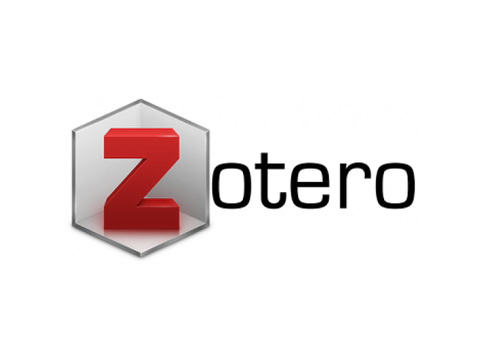

Je suis Idrissa OUEDRAOGO, hydrobiologiste et je m'intéresse à la dynamique des communautés aquatiques notamment les mollusques dans le contexte des changements climatiques et des pressions anthropiques au Burkina Faso.
Mon expertise repose sur la systématique des mollusques, les évaluations environnementales basée sur l’utilisation de la structure et de la dynamique des macro-invertébrés aquatiques comme indicateur de la qualité des milieux eaux. L’environnement dans lequel ces organismes vivent étant essentiel, je m’intéresse depuis 2015 au développement et à la mise en œuvre de technologies à moindre coût pour le monitoring des données biophysiques et climatiques.
J'ai grande expérience dans la recherche multidisciplinaire acquise dans les projets de développement au Burkina Faso et dans la formation sur la collecte et l'analyse de données environnementales pour les agences gouvernementales locales.
De février à juillet 2013: Expert Junior dans le cadre du projet pilote de Mentorat intitulé: “Filling the inter- generational gap in knowledge on Agricultural Water Management: twinning Junior and Senior Experts », par le Initiative for Mainstreaming Innovation du FIDA (Fonds International pour le Development Agricole). Participation au premier Forum Mondial Sur l'Irrigation
La présentation des citations et des références bibliographiques dépend du style.
Veuillez accéder au site web pour télécharger zotero sur ce site
